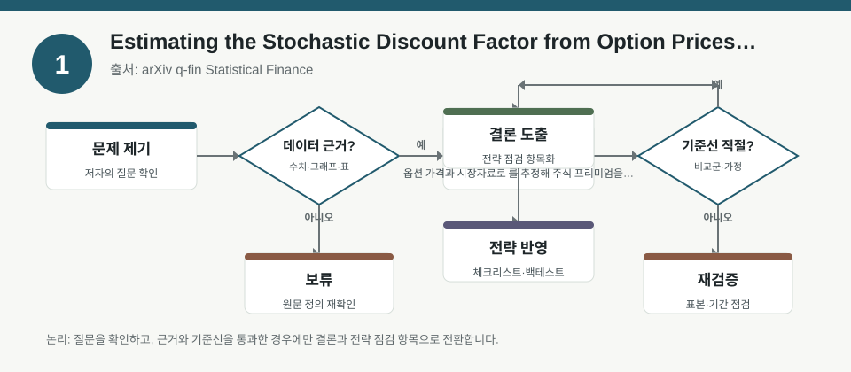
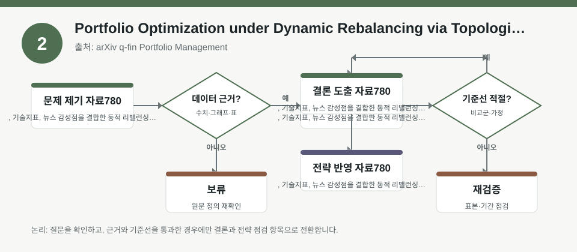
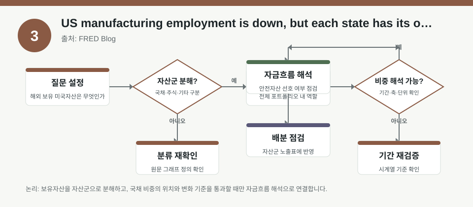

핵심 요약
- 결론: 이번 자료들은 “예측 신호”보다 “가정 검증”에 초점을 두고, 팩터 노출·리밸런싱·매크로 분산을 함께 점검하라는 메시지를 줍니다.
- 원칙: 수치가 메타데이터에 없는 경우 사실로 단정하지 말고, 옵션·뉴스·지역 고용처럼 원자료에서 확인해야 할 항목으로 구분해야 합니다.
주목할 자료
| 번호 | 자료 | 출처 | 원문 | 핵심 내용 | 데이터 포인트 | 리스크/한계 |
|---|---|---|---|---|---|---|
| 1 | Estimating the Stochastic Discount Factor from Option Prices and Predicting the Equity Premium | arXiv q-fin Statistical Finance | 원문 보기 | 옵션 가격과 시장자료로 SDF를 추정해 주식 프리미엄을 해석하는 프레임워크를 제안합니다. | S&P 500 옵션 기반, 전방향 기대와 변동성 스케일링 SDF | SDF의 안정성·비단조성·예측력은 표본구간과 옵션 유동성 가정 검증이 필요합니다. |
| 2 | Portfolio Optimization under Dynamic Rebalancing via Topological Data Analysis and News Sentiments | arXiv q-fin Portfolio Management | 원문 보기 | TDA, 기술지표, 뉴스 감성점을 결합한 동적 리밸런싱 포트폴리오 최적화 접근을 다룬다. | 자산 유사도, FinBERT 감성, 동적 재조정 | 감성 점수의 노이즈, TDA 특징의 해석성, 거래비용 반영 여부를 확인해야 합니다. |
| 3 | US manufacturing employment is down, but each state has its own story | FRED Blog | 원문 보기 | 미국 제조업 고용이 전국 단위로는 둔화돼도 주별로 이질성이 크다는 점을 강조합니다. | 제조업 고용 변화, 주별 분산, 지역별 경기 차이 | 전국 평균만 보면 산업·지역 리스크를 놓칠 수 있어 세부 지도와 정의를 확인해야 합니다. |
자료별 상세
1. Estimating the Stochastic Discount Factor from Option Prices and Predicting the Equity Premium

- 핵심: 옵션 가격에 내재된 기대를 활용해 SDF를 복원하고, 시간가변 변동성으로 스케일링해 해석력을 높이려는 접근입니다.
- 데이터 포인트: S&P 500 옵션과 시장자료만으로 전방향 기대를 읽는 구조이므로, 한국 투자자는 KOSPI200 옵션·변동성 지표와의 유사점과 차이를 비교해 볼 수 있습니다.
- 리스크: 표본기간, 옵션 유동성, 무차익·청산가정, 변동성 스케일링 방식이 결과를 좌우하므로 원문에서 추정식과 검증구간을 확인해야 합니다.
- 투자전략 반영 예시: KOSPI/KOSDAQ 섹터 익스포저 점검 시 “지수 옵션이 반영하는 기대가 현재 포트폴리오의 경기민감·변동성 민감도와 얼마나 다른지”를 체크리스트로 두는 방식이 적절합니다.
- 실행 예시: 과거 구간별로 KOSPI200 변동성 지표, 환율 민감 업종, 금리 민감 업종의 수익률 상관이 어떻게 달라졌는지 구간별 백테스트 항목으로 기록해 두면 좋습니다.
2. Portfolio Optimization under Dynamic Rebalancing via Topological Data Analysis and News Sentiments

- 핵심: 자산 간 구조적 유사성을 TDA로 잡고, 뉴스 감성으로 보정한 뒤 리밸런싱하는 다층 포트폴리오 설계입니다.
- 데이터 포인트: 기술지표·FinBERT 감성·동적 재조정이 결합되므로, 한국 투자자는 섹터 ETF나 개별주 묶음에서 감성 신호가 실제 팩터 익스포저를 얼마나 바꾸는지 확인할 수 있습니다.
- 리스크: 감성 모델의 언어·도메인 편향, TDA 특징의 경제적 해석, 그리고 리밸런싱 빈도에 따른 거래비용과 슬리피지를 반드시 검증해야 합니다.
- 투자전략 반영 예시: KOSPI/KOSDAQ 업종군을 나눠 뉴스 감성, 변동성, 유동성, 환율 민감도를 동시에 점검하는 “리밸런싱 전 체크리스트”를 만드는 데 활용할 수 있습니다.
- 실행 예시: 동일 섹터 내 종목군을 대상으로 감성 점수 변화가 포트폴리오 회전율과 최대낙폭에 미치는 영향을 백테스트 항목으로 분리해 기록하면 해석이 쉬워집니다.
3. US manufacturing employment is down, but each state has its own story

- 핵심: 전국 제조업 고용만 보면 둔화처럼 보이지만, 주별로는 서로 다른 경기 국면이 공존할 수 있다는 점을 보여줍니다.
- 데이터 포인트: 제조업 고용의 지역 분산은 공급망·산업 클러스터·정책 차이를 반영하므로, 한국 투자자는 미국 경기 지표를 그대로 단일 신호로 읽지 않도록 주의할 필요가 있습니다.
- 리스크: 메타데이터에 전국 변화율만 제시되어 있어, 어떤 주가 얼마나 기여했는지와 계절조정 방식은 원문에서 확인해야 합니다.
- 투자전략 반영 예시: 반도체·자동차·화학처럼 미국 경기와 환율에 민감한 KOSPI 업종은 “미국 전국 지표 + 지역별 제조업 분산 + 달러 강세/약세”를 함께 보는 점검표가 유효합니다.
- 실행 예시: 미국 제조업 관련 지표를 볼 때 전국 평균과 지역별 확산도, 그리고 한국 수출 업종의 환율 민감도를 함께 적어 두는 월간 매크로 체크리스트를 운영할 수 있습니다.
팩터·리스크·포트폴리오 관점
- 핵심: 세 자료 모두 신호 자체보다 “어떤 데이터가 어떤 가정을 통해 포트폴리오에 들어오는지”를 점검하게 하며, 팩터 노출·변동성·리밸런싱 비용·지역 경기 분산을 함께 보도록 유도합니다.
- 검수: 옵션 기반 SDF, 감성·TDA 결합 최적화, 지역별 제조업 해석은 모두 표본 선택과 모델 가정에 민감하므로 원문에서 추정 구간·변수 정의·거래비용 반영 여부를 확인해야 합니다.
정리
- 결론: 이번 자료의 공통점은 “예측값”보다 “해석 가능한 입력과 검증 가능한 가정”을 먼저 확인해야 한다는 점입니다.
- 다음 확인: 원문에서 옵션 표본, 감성 추출 절차, 지역별 고용 분해와 백테스트 설정을 먼저 검수하는 것이 좋습니다.